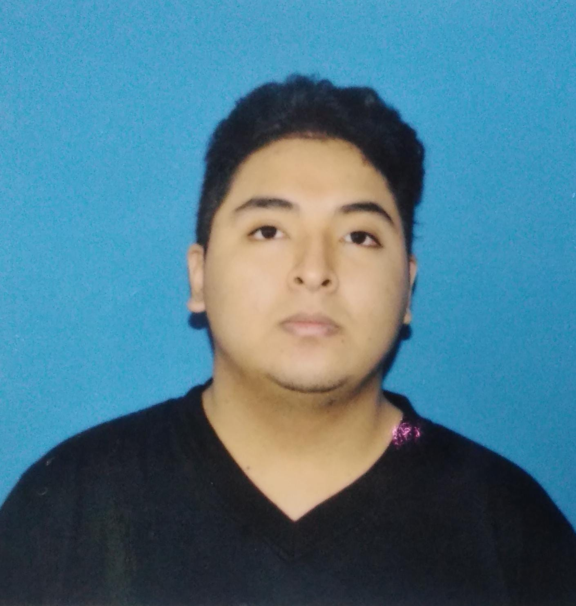

Nombre: Bravo Lucas Manuel
Edad: 20
Sin experiencia laboral
Soy actualmente un estudiante de una carrera terciaria sobre Analisis de Sistemas y desarrollo de software.
Estudios:
Secundario finalizado en Escuela de Educacion Tecnica Nº 3135 (EET Nº3135).
Graduado como Tecnico en equipos e instalaciones electromecanicas.
Terciario en proceso en Instituto de Educacion Superior Nº 6039 (IES Nº6039).
Graduado de nivel Intermedio-Alto en Instituto de Ingles Saint Thomas.
Certificado del curso "Introduccion a la programacion en Python" del proyecto 1000 Programadores Salteños.
Curso de Auxiliar de Instalaciones Electricas Domiciliarias
Skills:
Instalacion de circuitos electricos.
Traductor de Ingles-Español nivel Intermedio-Alto
Programacion Intermedia baja en HTML, Javascript, Python, Apache, MySQL.
Programacion Intermedia en Arduino UNO.
Hobbies:
Videojuegos y peliculas.
Lectura.
Navegar por internet.
Tallar madera.
Dibujo.
Quise estudiar esta carrera porque desde chico tuve interés en las computadoras y las
aplicaciones que hay en ellas, el querer saber como funcionan.
Fue principalmente por la influencia de los videojuegos que quedé alucinado en cómo se logra crear tales cosas,
la creacion de otros mundos, experiencias únicas, solo a través de la escritura.
Tengo la expectativa de que al finalizar la carrera tenga un buen entedimiento sobre diversos lenguajes de programación
para alguna vez poder unirme a algún equipo o comenzar un proyecto por mi cuenta.